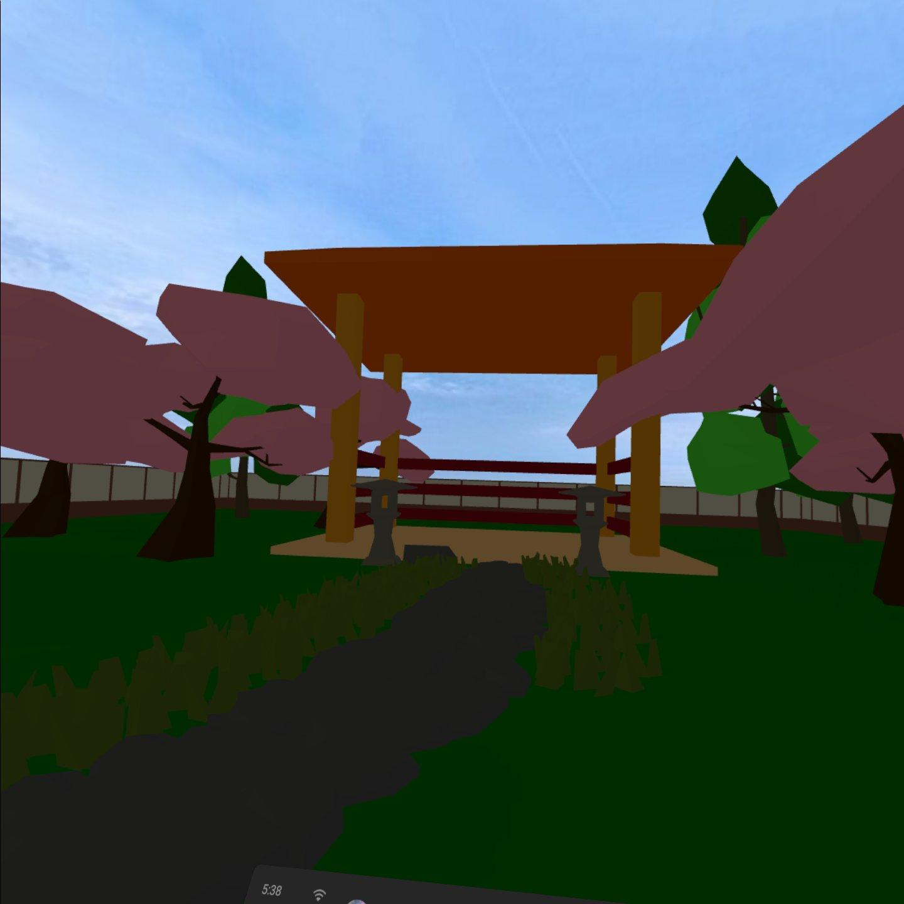

Week 5 Blog: Yoga and Meditation Exploration
This week was spent exploring both meditation and yoga experiences. We expanded on the groundwork that we set up the previous week as well as resolving several bugs. Also we transfered our development environment from Glitch to local development with VSCode and the Live Server extension. Although this week was a busy and hectic week for everyone, we were still able to make solid progress.
Successes and Accomplishments From This Week
Matthew started researching and developing feedback for meditation mode. Users can use this feature by either lying down or standing and holding or placing the controller on their belly. The current implementation tracks the users controllers as they inhale/exhale and provides visual feedback with a ring that dynamically resizes with each breath. Breath tracking can currently accessed through the meditation menu and pressing the
x-button
once it is selected in the menu. It can also be removed using the same button.

Current breath capture feedback mechanism
Hristo and Jane worked on designing and improving the menu interface that we started last week. New additions include additional info text for each option as well as a volume slider. Jane made the menu items usable by integrating the meditation audios/scripts that she recorded and edited as well as the sounds she compiled. So far each meditation option plays a recording when clicked, but the yoga options are still currently placeholders. Jane also started implementing sound and music selection to give users finer control of the soundscape. Currently the menu can be activated and deactivated by pressing the
a-button
and options can be selected using the
right trigger.

Menu with options and sliders
Hristo also tried adjusting the lighting of the scene since the colors seemed a bit dull. He also tried adjusting shadows to improve immersion and the overall aesthetic.

Previous scene lighting

Improved scene lighting
Phi worked on developing the yoga experience with recorded scripts as well as a display that leads a yoga session. He used some of his prior yoga experience to create slides with instructions as well as drawings with poses. Currently users do not use their controllers during a yoga session.

Snapshot of yoga routine
Matthew also started implementing a home screen for users to select their room but that is still a work in progress. Jane also tried animating the sky, but proved harder than we initially thought it would be. We are currently exploring other methods of adding life to the sky like 3D cloud and star models. Overall, we feel as though we made decent progress this week. You can track our development here. You can view the live prototype application here.
Plan for Next Week
We will connect the experiences together and unify them with the menu to have our Minimum Viable Product (MVP) in time for the midterm presentation on May 4th. Also taking care of bugs that have surfaced.
-
Phi and Jane:
- Record meditation tutorial, add soundtrack to the application
-
Improve look and feel of meditation tool
- Fine tune scene lighting and sound to improve the tool
-
Add meditation tutorial to walk user through how to meditate
- Initial proof of concept will be text based and plays through without pauses or interaction
- Phi: Write blog
-
Matthew and Hristo:
- Continue working on meditation
-
Integrate exhale/inhale tool into meditation tool
- Very simple feedback to user - user specifies variable inhale/exhale time that they shall attempt to meet, UI provides feedback about if they are meeting their breathing goal
-
Research techniques that may be feasible for classifying yoga poses (whether that be using classical pose estimation approaches or machine learning)
- Start with extracting data from the Oculus's head/hand controls
Blocking Issues
| This past week has been been a slightly slower week because we are 'getting into the thick of the quarter' - Phi. But, most things are coming together and mostly depend on connecting | the different elements together into a cohesive project. There are still some small hurdles that we may encounter in doing this, but we currently do not have any apparent blockers.